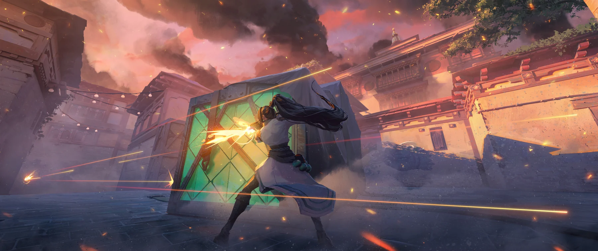

Entiende el objetivo antes de elegir agente
En los modos clásicos, dos equipos alternan ataque y defensa alrededor de la Spike. Los atacantes deben colocarla y protegerla hasta que detone, o eliminar al equipo rival; los defensores pueden impedir la colocación, desactivar la Spike o eliminar a todos los atacantes. Riot explica que las rondas de compra permiten preparar armas y habilidades. Si estás aprendiendo, empieza en un modo sin clasificación para entender recorridos y tiempos sin preocuparte por el rango.
Los cuatro roles en lenguaje sencillo
Los Duelistas suelen crear la primera oportunidad de entrada y buscar enfrentamientos; los Iniciadores ayudan a revelar o desplazar defensores; los Controladores bloquean líneas de visión y dividen el espacio; los Centinelas protegen zonas y vigilan flancos. Son funciones generales, no reglas que obliguen a jugar siempre igual. Antes de bloquear un agente, mira qué información, cobertura o defensa ya aportan tus compañeros y elige una tarea que puedas cumplir con el personaje que conoces.

Compra con el equipo y conserva una economía
Durante la fase de compra, revisa los créditos propios y la compra del resto antes de gastar todo. Si el equipo decide ahorrar una ronda, comprar un rifle en solitario puede dejarte sin recursos para el siguiente ataque. Elige un arma que puedas controlar y deja créditos para las habilidades que forman parte de tu plan. Riot recomienda probar armas y ajustar la compra a tu estilo y a la estrategia del grupo; no hay una compra universal que sea correcta en cada ronda.
Practica disparar y moverte por separado
Riot recuerda que conviene dejar de moverse antes de disparar para mejorar la precisión. Practica en el campo de tiro primero el control de una sola arma y después añade desplazamiento y habilidades. No cambies simultáneamente la sensibilidad, la mira y la forma de disparar: cuando algo falla, será difícil saber qué lo causó. La precisión no consiste en mover el ratón más rápido, sino en colocar la mira en una altura útil y detenerte cuando vas a tirar.
Comunica información concreta
Una llamada útil incluye lugar, cantidad aproximada de rivales y lo que están haciendo. Si no quieres usar voz, emplea el mapa y las señales del juego. Evita dar por cierto un dato que solo escuchaste: puedes decir “posible B” o marcar la zona para distinguir una pista de una confirmación. La comunicación puede ayudar incluso si no ganas el duelo; aporta información para que el equipo decida su siguiente movimiento.
Qué practicar durante la primera semana
Elige uno o dos agentes y aprende el alcance de sus habilidades sin tratar de memorizar todas las combinaciones de cada mapa. Haz una ronda de calentamiento, revisa una repetición si el cliente ofrece esa función y anota un hábito para mejorar en la siguiente partida. Cambia de modo si una sesión competitiva deja de ser divertida. La guía oficial de Riot también recomienda conocer los mapas y revisar los ajustes para adaptar el juego a tu manera de apuntar y comunicarte.
En resumen
Para empezar en Valorant, entiende el objetivo, elige un rol que puedas desempeñar y compra con el equipo. Practica movimiento y puntería por separado y comunica datos concretos; la selección de agentes y sus funciones pueden cambiar con los parches.
Preguntas frecuentes
¿Cuáles son los cuatro roles de Valorant?
Duelista, Iniciador, Controlador y Centinela, según la clasificación de Riot.
¿Qué agente es mejor para principiantes?
No hay uno mejor para todos. Empieza con un agente cuya función y habilidades entiendas y revisa la información oficial más reciente.
¿Qué debería comprar al empezar una ronda?
Ten en cuenta tus créditos, la compra de tus compañeros y el plan de la ronda; Riot recomienda adaptar armas y habilidades a tu estilo y a la estrategia del equipo.
¿Cómo puedo mejorar mi puntería?
Practica una sola variable cada vez y detente antes de disparar para mantener precisión, tal como recomienda la guía de Riot.
Fuentes y lecturas
Consulta la fuente original cuando exista y su fecha; los anuncios, el catálogo y las guías de terceros pueden cambiar.